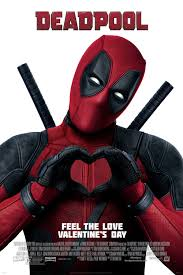

Rodolphe de Dorlodot
Very Junior Programmer
I wanted a new challenge wich i could do between the check-ins and outs in my Hotel, it happens to be Coding !
My Hotel Website.My favorite movies

|
2016 - Suicide SquadIt feels good to be bad...Assemble a team of the world's most dangerous, incarcerated Super Villains, provide them with the most powerful arsenal at the government's disposal, and send them off on a mission to defeat an enigmatic, insuperable entity. U.S. intelligence officer Amanda Waller has determined only a secretly convened group of disparate, despicable individuals with next to nothing to lose will do. However, once they realize they weren't picked to succeed but chosen for their patent culpability when they inevitably fail, will the Suicide Squad resolve to die trying, or decide it's every man for himself? |
|  |
2016 - DeadpoolThis is the origin story of former Special Forces operative turned mercenary Wade Wilson, who after being subjected to a rogue experiment that leaves him with accelerated healing powers, adopts the alter ego Deadpool. Armed with his new abilities and a dark, twisted sense of humor, Deadpool hunts down the man who nearly destroyed his life. |